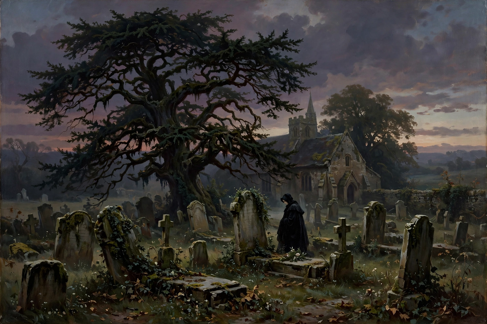

From Wikipedia, the free encyclopedia
| Form | Poem of lament and reflection |
|---|---|
| Classical metre | Elegiac couplet (hexameter + pentameter) |
| Early practitioners | Callinus, Tyrtaeus, Mimnermus, Theognis |
| Famous examples | Lycidas, Adonais, In Memoriam, Duino Elegies |
An elegy is a poem of serious reflection, typically a lament for the dead. In classical antiquity the term referred not to subject matter but to a metre — the elegiac couplet, alternating lines of dactylic hexameter and pentameter — and Greek and Roman elegists wrote on war, politics, love and mythology as well as mourning. In modern usage, elegy usually means a meditative poem of grief and consolation.

Thomas Gray's churchyard elegy (1751) fixed the modern sense of the genre.
Greek elegy, sung to the flute (aulos), began in the seventh century BC with martial exhortations by Callinus and Tyrtaeus and the worldly-wise verse of Mimnermus and Solon; Theognis left a large collection of sympotic elegy. At Rome, the elegiac couplet became the vehicle of love poetry in the first century BC: Gallus, Tibullus, Propertius and Ovid (in the Amores, Heroides and the exilic Tristia) wrote subjective poems addressed to mistresses under pseudonyms such as Cynthia and Corinna.
The Renaissance pastoral elegy — mourning a shepherd-poet in an idealised landscape — produced Milton's Lycidas (1637) for Edward King, Shelley's Adonais (1821) for Keats, and Matthew Arnold's Thyrsis. Thomas Gray's Elegy Written in a Country Churchyard (1751), meditating on anonymous rural graves, became one of the most quoted poems in English. Tennyson's In Memoriam A.H.H. (1850), written over seventeen years after the death of Arthur Hallam, broadened elegy into a long meditation on grief, faith and Victorian science.
Twentieth-century elegy includes Thomas Hardy's poems for his wife Emma, Rilke's Duino Elegies (1923), W. H. Auden's In Memory of W. B. Yeats (1939) with its famous line "poetry makes nothing happen", and Dylan Thomas's refusal to mourn in a "fury" of restraint. The genre remains a central mode for confronting personal and collective loss.